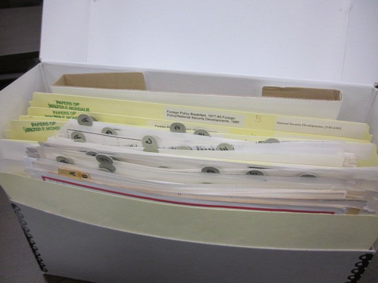
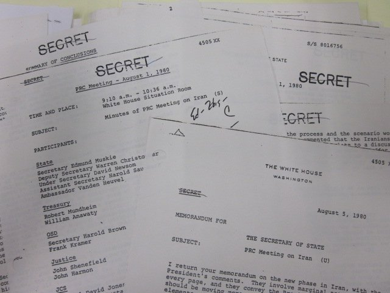
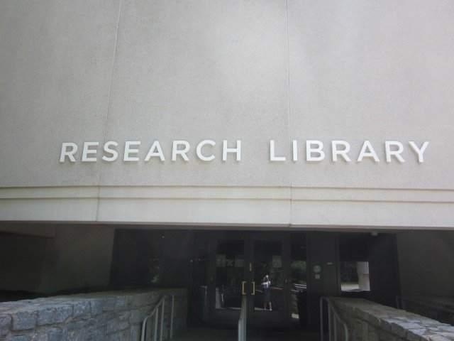
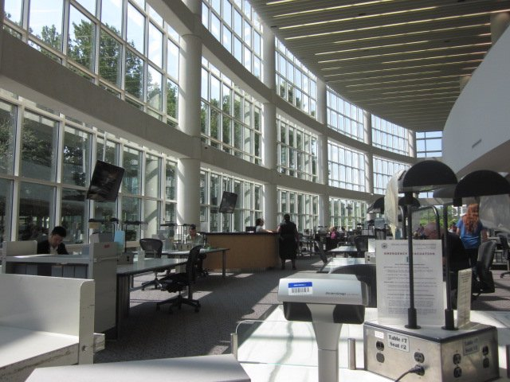
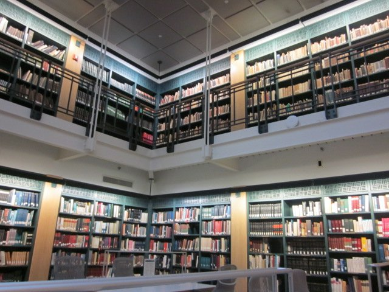
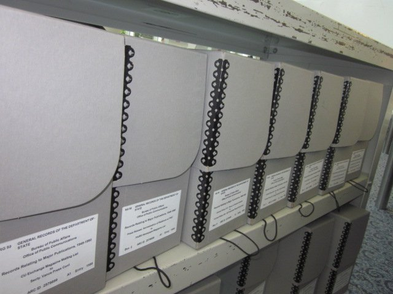

A study of how financial and military aid was explicitly leveraged as a mechanism to secure the durability of the Camp David Accords.
I conducted archival research in Atlanta, Georgia; College Park, Maryland; and New York City. Beginning at the Jimmy Carter Library (JCL) in Atlanta, I spent three weeks in June investigating the Carter Administration's approach to peace negotiation and diplomacy in the Middle East. I focused on declassified documents on the Administration's foreign policy, including records on arms sales, newspaper clippings and journalism, meeting memos, agendas, draft treaties, and communications. The Presidential Daily Briefs and the personal correspondence between key U.S. actors shed light on the internal decision-making processes behind U.S. mediation and diplomacy. Working through these materials, I began to develop a feel for government thought and behaviour — slowly assembling a map of the actions and actors that shaped this historical moment.
In New York, I consulted the American Jewish Committee and the American Jewish Historical Society archives to gain Israeli and Jewish American perspective on American intervention in the Middle East. I found internal Israeli debates from the Mapam party in Jerusalem following the 1974 Geneva Conference that proved particularly useful in understanding Israel's dilemmas with diplomacy and existential fear.
My archival research in the U.S. that summer concluded with a trip to College Park, Maryland, at the National Archives and Records Administration (NARA). I explored U.S. foreign policy documents, memoranda, and communications on President Carter's human rights commitments as well as the Middle East peace process. It was in an archival collection at NARA where I found multiple files on the aid package that explicitly linked American financial and military assistance to the implementation and durability of the peace agreement.






Full manuscript forthcoming. A PDF will be linked here once final revisions are complete.